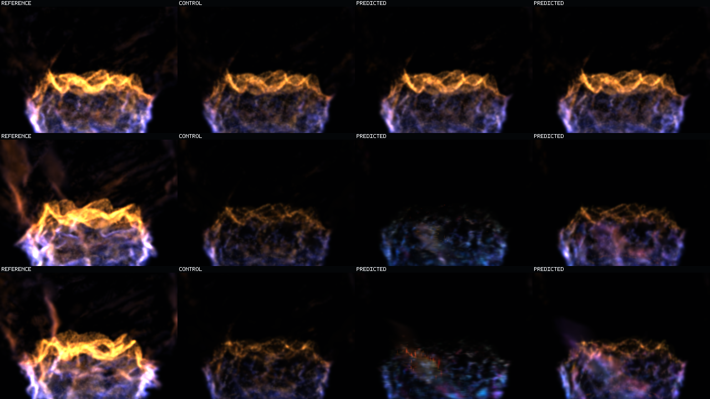
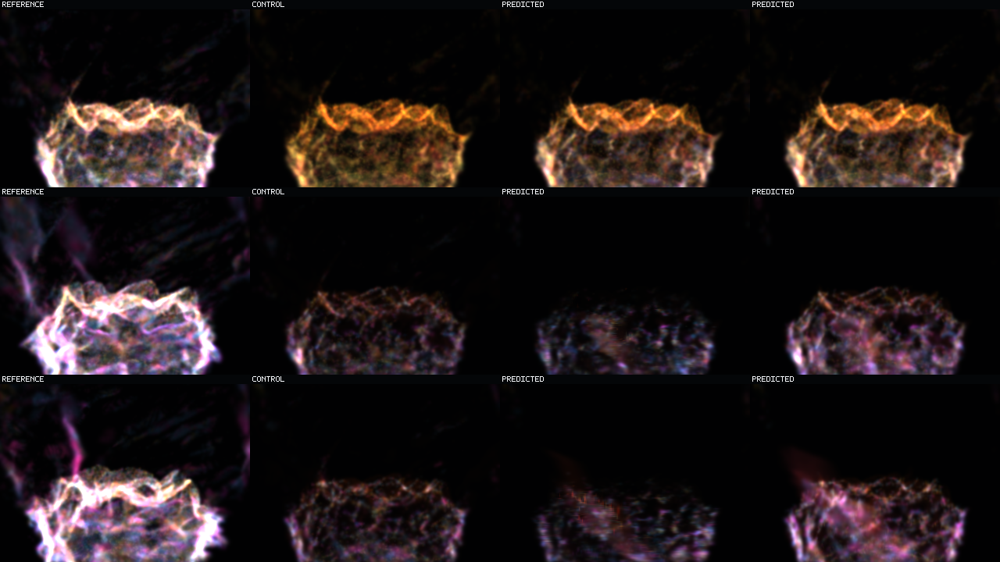

Question: Can scheduled predicted-state exposure arrest the low-energy appearance attractor while occupancy and support remain unchanged?
Answer: materially yes. The old protected recurrence loses motion-cohort state by 1.75x to 2.27x versus copied control; the rollout-aware recurrence reaches 0.925x to 1.004x aggregate and visibly retains coherent fire through 10.08 seconds.
Remaining limit: the result is still shorter and lower-energy than exact target, and Q4/transport/birth cross slightly above copied-control error in the final quarter.
This image is one continuous held-out rollout. Rows are time: top `0.16 s`, middle `5.12 s`, bottom `10.08 s`. Columns are role and intervention: 1 exact reference, 2 copied-current control, 3 old teacher-forced protected prediction, 4 new rollout-aware protected prediction. Both prediction columns say `PREDICTED` inside the raster because each originated in a separate three-role witness.

Same rows, columns, payloads, and cadence with a display-only `0.625` motion-cohort mix: green Q1/Q2, yellow Q3, red Q4, blue transported, magenta birth. The mix does not mutate model state.

Each video is finite, non-looping, `63` frames at `160 ms` cadence (`10.08 s`). Within each video: left exact reference, middle copied control, right prediction. The left video is the old teacher-forced model; the right is the rollout-aware model.
Matched moving debug witnesses. Reference, control, and prediction roles are retained in both videos.
Aggregate prediction/control state-MSE ratio changes from baseline to rollout-aware: Q1 2.1757 to 0.9260; Q2 2.0310 to 0.9323; Q3 1.8994 to 0.9250; Q4 1.7548 to 0.9573; transported 2.2684 to 0.9781; birth 2.1330 to 1.0041.
All support counts are exactly identical between baseline and intervention across every step and cohort. Rollout-aware energy retention exceeds copied control in every aggregate cohort, but remains only 0.1770 to 0.4368 of exact energy.
This is one held-out basin under an isolated offline splat raster. It establishes useful-horizon recurrent mitigation without copied-frame reuse, not analytical-raymarch agreement, multi-basin generalization, indefinite stability, runtime integration, or operator acceptance.